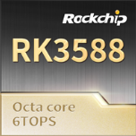

嵌入式软件开发工程师
从芯片底层到上层应用，从 Linux 内核到 AI 模型部署 — 全栈嵌入式工程师
22岁 | 电话：17727297727 | 邮箱：932618461@qq.com | 住址：深圳市

嵌入式软件开发工程师 · 2026.03 – 2026.06
嵌入式软件开发工程师 · 2025.09 – 2026.02
嵌入式软件开发工程师 · 2024.12 – 2025.03
嵌入式软件开发工程师 · 2025.04 – 2025.06
嵌入式软件开发工程师 · 2024.04 – 2024.08
嵌入式软件开发工程师 · 2024.09 – 2024.12